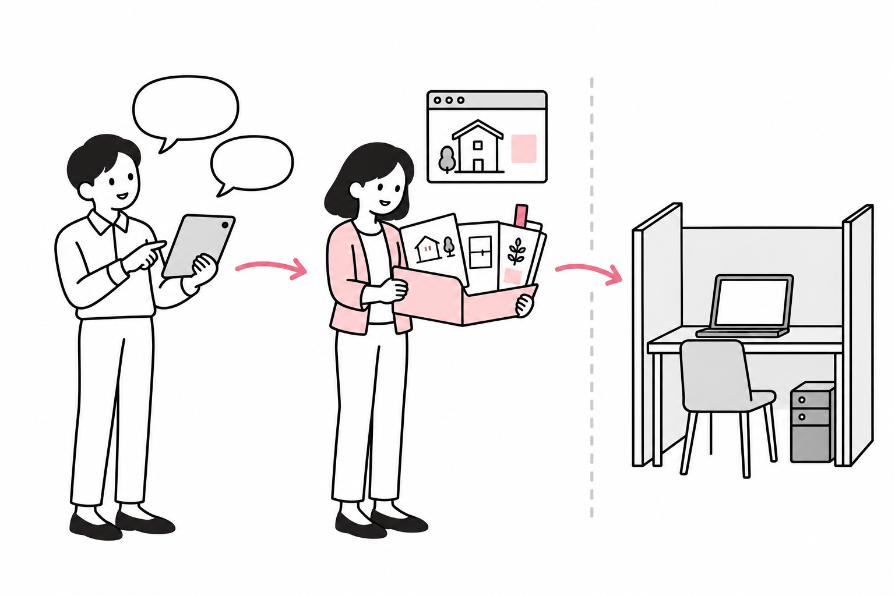
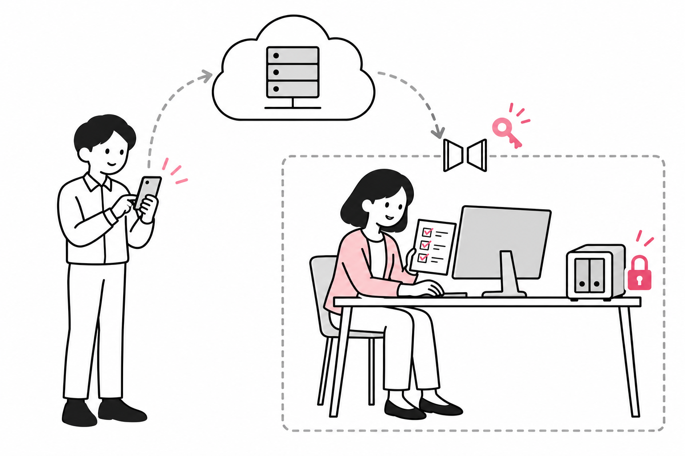
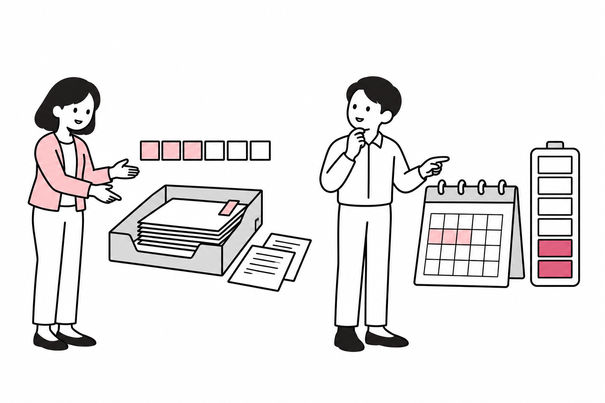
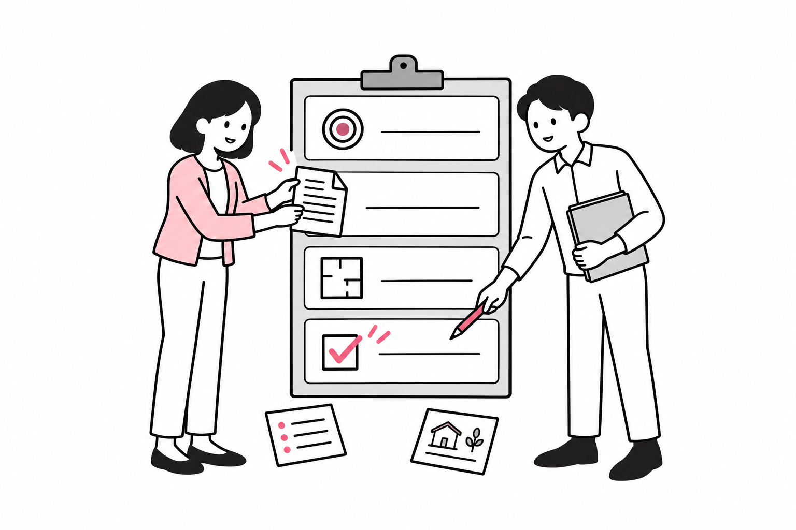
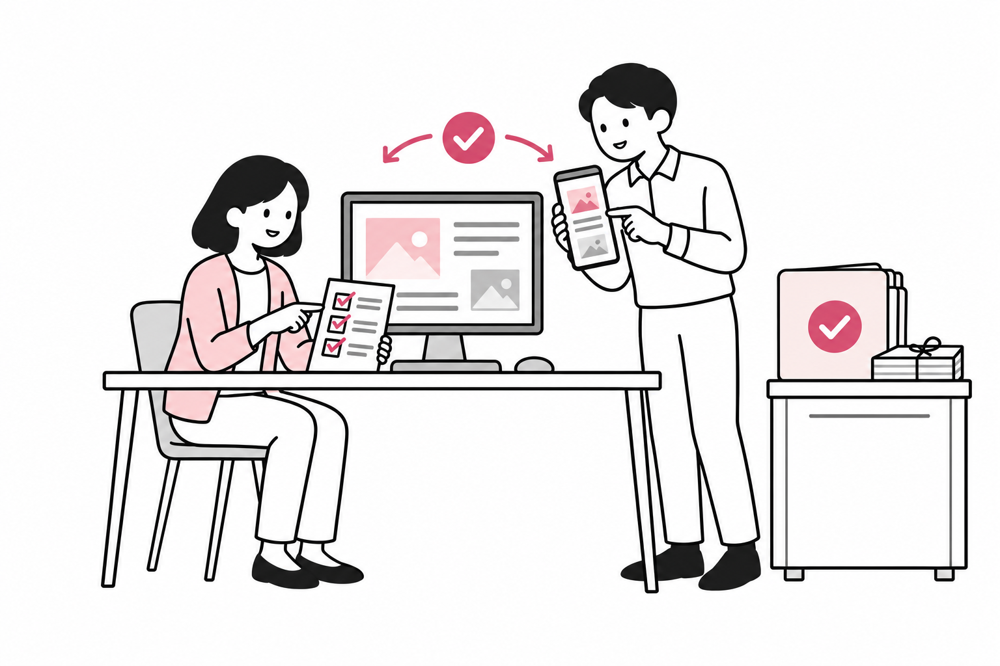

QAF dot × Codex 協作實用指南
從一句需求，到可查證、可修改、可接續的成果
把一份音樂研究做成可閱讀的文章，或把一組建築資料整理成網站，需要的不只是一個好答案。資料要有來源，修改要接上最新版，圖文要能閱讀，完成後也要找得到。
這份指南採用一個簡單的工作方式：由你決定目標與重要選擇，QAF dot 維持整體方向、整理資料與協調進度，Codex 在選定的專案和環境中完成需要的製作、修改與測試。雙方都能研究、寫作與實作；每項工作仍要指定主要負責者。
文中的產品能力依官方資料查核；流程、表格與模板是本文建議；「70／30 配額控制」則是尚未建置的構想。功能會受帳號、平台、版本、工作環境與權限影響，使用時應再確認實際狀態。
01 先把工作交代成一個成果
不用一開始就寫很長的提示。先說清楚四件事，往往比一次貼滿資料更有效：
- 要完成什麼：例如一篇能在手機閱讀的文章，而不是泛泛地「幫我研究」。
- 以什麼為準：指定原文、資料來源、目前正式檔案及已確定的版本。
- 可以改到哪裡：可以新增頁面，但保留既有內容；可以準備發布版本，但發布前先確認。
- 怎樣才算完成：內容有來源、圖片有替代文字、連結有效，且實際檢查桌面與手機畫面。
接下來由助理補查能查到的資料，只把真正需要你決定的問題帶回來。小問題直接完成；需要長期累積、多人分工或操作專案檔案時，再整理成正式任務。
- 單次解答或想法→日常對話帶上問題與希望理解的程度
- 完整、可審閱成果→QAF dot／Work指定讀者、來源、格式與驗收
- 修改既有檔案或網站→對應專案／Codex先核對正式位置、版本與範圍
圖 1 從想拿到的結果 選工作起點
單次解答、完整成果與修改既有專案走不同起點；需要長期累積時，再放入共同專案。
一分鐘判斷
| 你現在的需要 | 建議從哪裡開始 | 最重要的交代 |
|---|---|---|
| 問概念、聊想法、比較方向 | 日常對話 | 問題與希望理解到的程度 |
| 從資料做到一份完整成果 | QAF dot 或 Work 任務 | 讀者、來源、格式、完成標準 |
| 修改既有網站、檔案或程式 | 對應的專案與 Codex 任務 | 正式位置、版本、允許修改範圍 |
| 持續整理同一個主題 | 有共同資料的專案 | 分篇成果、共用資料與固定規則 |
官方把 Chat 定位為問答與來回討論，Work 著重可交付的完整結果，Codex 則提供開發工具與較多技術細節。這是選擇工作介面的依據，不宜用來限制它們只能做某一種事。官方介面比較
02 能力有交集 責任要清楚
QAF dot 適合接住跨主題的需求，把零散想法整理成可執行的工作。Codex 適合在指定專案裡查看檔案、修改內容、執行命令和檢查結果。遇到純研究或短文，QAF dot 可以直接完成；若你已在 Codex 裡工作，也可以直接由該任務完成，不必刻意多轉一手。
官方說明中，dot 可進行研究、資料分析、文件準備與軟體工作，也能協調多項任務。因此，「QAF dot 統整、Codex 實作」是本文選擇的協作安排，不是固定能力邊界。官方 dot 介紹
協調・核對
測試・修改
研究・分析
寫作・設計・實作
閱讀、研究、寫作、視覺、開發與協調都可以互相支援；表格再列各項檢查重點。
圖 2 先分責任 再選工具
研究、整理與製作可以來回協作；同一份成果仍需有人負責整合與驗收。
| 工作 | QAF dot 可先負責 | Codex 可接續或獨立完成 | 交付時檢查 |
|---|---|---|---|
| 閱讀理解 | 釐清問題、串起背景 | 深讀指定檔案、逐段比對 | 引用、頁碼與版本 |
| 研究比較 | 找來源、整理分歧與疑點 | 查技術依據、計算或測試 | 事實與推論有無分開 |
| 文章整理 | 決定讀者、結構與重點 | 批次編輯、內容整合 | 內容是否完整、能否修改 |
| 視覺設計 | 定義風格、圖解與敘事 | 製作版面、元件和互動 | 字級、資訊順序、手機閱讀 |
| 軟體開發 | 釐清用途、範圍與優先順序 | 寫程式、除錯、執行測試 | 實際行為與測試證據 |
| 專案協調 | 追蹤決定、依賴與待辦 | 回報變更、風險和阻塞 | 下一步、負責者與停止條件 |
比較可靠的分工是「一個主要編輯者，加上獨立的查證與審閱」。可以同時查文獻、整理圖說、檢查連結；兩個任務若要改同一個檔案，就應先約定順序或使用隔離的工作副本。
03 日常對話與專案如何銜接
日常對話適合發散：今天聊一首歌，明天問一個和弦，途中也可以改變方向。當你想把內容累積成教學、比較表或網站時，應把已確認的部分轉成一份明確工作說明。
不用把每段閒聊都變成專案。符合下列任何一項，就值得整理：同一主題會反覆使用、需要兩種以上成果、依賴多份共同資料，或修改會影響既有作品。官方也建議，持續性或多成果工作使用專案，不同成果則分開對話。專案與對話

這是交接關係，並不代表歷史、檔案和權限自動互通。
圖 3 對話 專案與環境是不同層次
對話記錄討論，專案組織資料，執行環境決定在哪裡工作；三者需要明確連接。
| 層次 | 應放什麼 | 開始前確認 |
|---|---|---|
| 對話 | 問題、回覆、修正與決定 | 這次要延續哪一項成果？ |
| 專案 | 共用資料、正式檔案、共同規則 | 哪一份是正式來源？ |
| 執行環境 | 能讀寫的檔案、軟體、工具 | 目前在哪台電腦或雲端工作？ |
| 權限 | 可讀、可改、可傳送的範圍 | 這次行動是否在批准範圍內？ |
QAF dot 能延續相關脈絡，但新任務有自己的對話，不會自動收到所有歷史；連接電腦也不會開放每一段既有 ChatGPT 或 Codex 對話。接續舊工作時，應指定對應任務與成果，再核對能否讀取和繼續。任務與脈絡延續
若要讓多個專案採用同一項做法，例如檔案命名方式，應把規則放進各專案可讀的文件，並確認相關工作已讀到。只在一段對話說過「以後都這樣」，不足以證明其他任務都已收到，更不能宣稱已廣播給所有 Codex 對話。
04 一次完整協作的六個步驟
以「把研究做成可閱讀的網頁文章」為例，工作可以這樣走。
圖 4 從需求走到驗收
需求 → 整理依據 → 確認位置 → 製作 → 驗收 → 交付。驗收發現問題，就回到對應步驟修正。
| 步驟 | 要做的事 | 留下的結果 |
|---|---|---|
| 1 需求 | 確定讀者、目的、範圍與限制 | 一段任務說明 |
| 2 依據 | 查來源、辨識版本、列出疑點 | 來源清單與內容提綱 |
| 3 位置 | 確認正式專案、環境與修改範圍 | 工作位置與檔案清單 |
| 4 製作 | 完成文章、圖表、頁面與必要互動 | 可檢查的作品版本 |
| 5 驗收 | 分別檢查內容、功能與畫面 | 通過項目及待修問題 |
| 6 交付 | 提供可開啟成果、變更摘要與後續狀態 | 成果位置與交接紀錄 |
驗收不能只看一句「完成」。建置成功，表示建置流程通過；頁面能開，表示這個入口可用；手機沒有文字溢出，才是對應畫面檢查的證據。三者各自記錄，尚未測試的部分直接標明。
如果畫面工具暫時不可用，可以先完成文字、檔案與建置檢查，保留「畫面未驗證」。工具恢復後，再補上那一層驗收。官方也提醒，任務執行結束不等於要求的結果已實現或送達。如何檢查任務成果
05 正式來源 版本與交接
每個成果先指定一份正式來源，例如網站專案中的文章檔。對話草稿、下載副本和歸檔檔案可以保留，但應標明用途，避免人人手上的「最新版」各不相同。
- 工作版持續修改
留差異與待辦 - 審閱版標明版本日期
核對內容與畫面 - 定稿／歸檔確認交付狀態
能追回正式來源
同一檔案一位主要編輯者；其他人查證與審閱。舊稿保留比對，避免整份覆蓋。
圖 5 兩段對話 共用一份正式來源
修改前讀最新版；一人負責主要編輯，其他人查證或審閱，完成後交回同一份成果。
三種版本 各自有用途
| 版本 | 用途 | 建議處理 |
|---|---|---|
| 工作版 | 正在修改、允許不完整 | 保留修改紀錄與未完成項目 |
| 審閱版 | 請人核對內容與畫面 | 附日期、版本和待決定事項 |
| 定稿與歸檔版 | 記錄已確認的交付狀態 | 與正式來源對得上，可追查內容 |
日期相同、檔名相似，仍可能是不同內容。重要修改可以記下版本號、檔案大小或雜湊值；程式專案也可用版本控制記錄差異。這些是用來比對實際內容，不宜只憑檔名判斷。
交接時至少帶走六件事
- 目標：本次要完成的成果與讀者。
- 正式來源：可存取的專案、文件或版本。
- 已定案內容：例如採用哪個標誌、哪些章節保留。
- 允許改動範圍：檔案、段落、功能及不可改的部分。
- 目前狀態：改了什麼、驗證了什麼、還缺什麼。
- 完成條件：交付格式、檢查項目與何時需要詢問。
若你直接在 Codex 改了方向，也應把重要決定補回共同工作說明，讓 QAF dot 依據新的目標協調。交接不必重貼所有聊天紀錄，但要包含會改變下一步判斷的資訊。
06 手機 本機 雲端與 NAS
先分清楚「從哪裡下指令」和「工作在哪裡執行」。手機可以是入口，真正執行工作的是雲端或已連接的電腦。
dot 有自己的雲端電腦與瀏覽器；需要本機資料的任務，則使用已連接、在線且開著 ChatGPT 應用程式的電腦。雲端瀏覽器有獨立的登入狀態，不會自動繼承你本機的網站登入。電腦與應用程式連接

自己的檔案、軟體與登入
在線・應用程式開啟
存取已允許
本圖示意由本機存取 NAS；其他環境仍須另行核對。
圖 6 手機可以交代工作 資料仍在各自的位置
先辨識資料在哪裡，再確認連線、工具和權限；NAS 要由實際可連到它的環境存取。
| 位置 | 適合的工作 | 需要確認 |
|---|---|---|
| 手機 | 提需求、補資訊、看回報 | 使用的介面是否支援該任務 |
| QAF dot 的雲端電腦 | 公開研究、雲端檔案、一般製作 | 所需工具、來源與登入是否可用 |
| 使用者的本機 | 指定資料夾、桌面程式、本機網站 | 電腦在線、應用程式開啟、存取已允許 |
| 已設定的雲端開發環境 | 特定程式庫與可重現的開發工作 | 專案、依賴與設定是否正確 |
| NAS | 集中保存的資料與成果 | 執行環境能否連線、掛載及讀寫指定位置 |
NAS 是儲存位置，不是另一種自動授權。知道一個路徑，與成功讀取其中一份檔案，是不同證據。開始前先做小範圍的讀取確認，再依任務決定是否需要寫入；不要把整個 NAS 開放當作預設做法。
本機離線時，能獨立進行的公開研究和文字整理可以繼續；依賴本機的修改則要保留進度等待。既有任務也不會因為換了電腦，就把檔案、工具與登入狀態一起搬過去。任務與環境條件
操作桌面時，再留意共享畫面。尤其有前景滑鼠、鍵盤操作的情況，應避免使用者與多個任務同時點選同一視窗；工具與作業系統的運作方式也需個別確認。官方電腦操作說明
07 三種實際工作如何分工
以下是可套用的工作範例，不涉及特定使用者的私人資料。
圖 7 先辨識證據 再做出可用成果
研究先確認對象與版本，再分清來源、觀察、推論與缺口，最後轉成適合讀者使用的內容。
A 音樂研究 從概念走到能練習
假設要整理「一首歌的和聲與吉他練習」，先指定歌曲、版本及要研究的範圍。若討論某次現場演出，不能直接拿錄音室版本當成同一份證據。
QAF dot 可以整理研究問題、比較來源、規劃由淺入深的閱讀順序；Codex 可以把確認過的資料做成時間軸、和弦表或練習頁。兩者都可以分析，但須把「來源記載」「聽辨判斷」與「教學簡化」分開。
一份好用的成果應包括：要先聽什麼、關注哪個段落、練習哪個動作，以及如何判斷是否做到。可以使用自行編寫的練習示例；不要為了讓文章看起來完整，擅自複製整首受保護的歌詞、樂譜或錄音。
驗收例：段落時間對得上指定版本；教學示例和原曲引述有區別；引用可追查；練習指示能實際照做。
B 吉他研究 歷史規格與眼前這把琴分開
「某年代某型號的典型配置」只能回答歷史問題。要判斷一把實際樂器，還需要它目前的照片、零件標記、維修紀錄與必要的量測；不能單憑型號或序號，就把所有零件認定為原裝。
建議先拆成三欄：
- 年代問題原廠目錄・當年圖紙→歷史規格
- 個體問題實物照片・標記・量測→目前配置
- 資料缺口模糊照片・缺少紀錄→待確認項目
圖 7A 吉他研究的三條證據路徑
原廠歷史文件、個體現況與待確認缺口分開走，不能把歷史上的典型配置直接填成眼前這把的實測結果。
| 問題 | 優先使用的證據 | 可以得出的結論 |
|---|---|---|
| 當年如何介紹這個型號？ | 對應年份的原廠目錄、圖紙與文件 | 該來源記載的年代規格 |
| 眼前這把目前裝了什麼？ | 實物照片、標記、維修紀錄、量測 | 這個個體的已確認配置 |
| 哪些地方仍有疑問？ | 資料落差、模糊照片、缺少的紀錄 | 待確認項目與下一步 |
QAF dot 先建立年代、型號與來源脈絡；Codex 整理零件表、對照圖或電路示意。電路圖要分清楚原廠文件、現況追線與解說用簡圖。未見到的接線、數值與改裝歷史保留為未知，避免把常見配置直接填成實測結果。
驗收例：每項配置都有證據狀態；歷史規格與現況分欄；沒有把圖片生成內容當成實物證據。需要拆裝或涉及安全的測試，由具備經驗的人處理。
C 建築閱讀 從文字摘要走到圖面關係
整理建築書籍或圖面時，先確定書名、版本、章節、頁碼或圖號。若同時有平面、剖面、照片與文字，應記錄它們描述的是同一時期、同一方案，還是不同階段。
QAF dot 可以整理作者的論述、問題和比較架構；Codex 可以建立索引、做圖文對照、把資料排成可閱讀的網頁。分析時可逐一檢查入口、動線、尺度、採光和空間關係，但每個結論都應指出依據。
圖 7B 建築閱讀的對照與回查
文字和圖面各自辨識來源，再交叉核對；推論或缺圖之處回到資料端確認。
| 資訊層次 | 寫法示例 |
|---|---|
| 作者或原圖明確記載 | 「作者在第 X 頁提出……」 |
| 從圖面可觀察到 | 「依圖 A 與剖面 B，可見……」 |
| 閱讀者的推論 | 「這可能表示……，仍需另一張圖確認。」 |
| 尚待補充 | 「圖中沒有標示，暫不判定。」 |
驗收例：文字與圖號相符；圖解標明是否為分析重繪；沒有把概念示意當作可施工圖。涉及法規適用、結構安全或施工決策時，另查現行依據並由適當專業人員覆核。
08 常見衝突的症狀 原因與恢復方法
多數問題先從「來源、版本、環境、權限、驗收」五個方向排查，比反覆重做整個任務有效。以下是工作方法上的排查表，不是對所有平台的故障診斷。
- 來源與版本
漏接決定・舊稿覆蓋・同檔互改・重複製作・方向不同步
→ 讀正式來源 → 比對差異 → 一人整合 - 執行環境
找不到檔案・手機可聊但本機停住・NAS 無法存取
→ 核對原環境 → 檢查連線、掛載和權限 - 共享畫面
滑鼠、視窗或選取狀態互相干擾
→ 停止重疊操作 → 核對畫面 → 依序續做 - 驗收與交付
完成卻有畫面問題・上傳後找不到或打不開
→ 補做實測 → 核對目的地 → 只補失敗部分 - 停止控制
說停止後，部分工作仍在進行
→ 分別核對主工作、個別任務與排程
圖 8 先找衝突位置 再選恢復路徑
來源、環境、共享畫面、驗收與停止控制，各有不同排查方式；修正後回到原本的完成條件重新驗證。
| 症狀 | 可能原因 | 預防方式 | 恢復方法 |
|---|---|---|---|
| 新任務不知道已定案的設計 | 關鍵決定留在另一段對話 | 交接時附決定摘要與正式素材 | 補入已確認決定，先讀現有成果再修改 |
| 修改後又回到舊內容 | 以過期副本覆蓋正式檔 | 指定正式來源，修改前比對版本 | 保留衝突副本，逐項合併，不直接整檔覆蓋 |
| 兩個任務互相改壞同一檔案 | 編輯範圍重疊 | 一位主要編輯者，其他人查證審閱 | 停止重疊寫入，檢查差異後由一人整合 |
| 重複找資料、重複生成素材 | 沒有共用來源與進度 | 保留已完成清單與可用成果 | 先盤點現有材料，只補缺口 |
| 找得到任務卻讀不到檔案 | 任務、電腦或工作目錄不一致 | 開始前確認環境與檔案 | 回原環境核對，不把未找到當成不存在 |
| 手機能聊天，本機步驟沒進展 | 電腦離線或必要程式未開 | 分清入口與執行位置 | 恢復原電腦連線，重新確認任務可執行 |
| NAS 路徑正確，仍無法使用 | 網路、掛載或讀寫權限不符 | 在實際執行環境先做小範圍確認 | 分別檢查連線、掛載與權限，不繞過拒絕 |
| 滑鼠亂跳、視窗或選取改變 | 同時操作同一桌面畫面 | 安排操作時段，分離可獨立的工作 | 停下重疊操作，核對畫面狀態再續做 |
| 說已完成，畫面卻有問題 | 只做了檔案或建置檢查 | 內容、功能、畫面分開驗收 | 補做實際操作與不同螢幕尺寸檢查 |
| 已上傳，但找不到或打不開 | 上傳回應不確定、位置或權限有誤 | 上傳後核對檔名、大小、位置與開啟結果 | 先查是否已存在，再補傳失敗項目 |
| 改了方向，另一端仍照舊做 | 新指示沒有進入共同工作說明 | 決定變更時同步目標與限制 | 明確停止舊方向，列出保留與重做部分 |
| 說停止，部分工作仍在進行 | 主對話、個別任務與排程狀態不同 | 說清楚停止對象與是否取消後續執行 | 分別核對相關任務及排程，保留已完成結果 |
停止工作不會撤回已寄出的訊息，也不會自動復原已修改的檔案。官方對主工作、個別委派任務與排程提供不同控制，應逐項確認。停止與管理工作
09 上下文 配額與費用分開看
這三件事常一起出現在介面上，但回答的問題不同。

整理關鍵決定
維持來源可查
看剩餘比例
與重置時間
核對方案、設定
與實際帳務
圖示是概念符號，沒有表示即時剩餘值；三個指標不可互相代換。
圖 9 上下文與帳號配額 各看自己的刻度
一個關乎當前能參照多少資訊，一個關乎一段期間內可用多少資源；圖中數字只是控制構想的示意。
| 指標 | 回答什麼問題 | 使用時留意 |
|---|---|---|
| 上下文 | 這次處理能帶入多少資訊？ | 關鍵決定和正式來源是否仍清楚可查 |
| 帳號使用額度 | 指定期間還能使用多少資源？ | 用量項目、期間、剩餘比例與重置時間 |
| 點數或費用 | 使用如何計價、可能增加多少成本？ | 方案、模型、速度、任務類型與付費方式 |
目前官方說明，與 dot 的對話本身不計入 ChatGPT 使用限制；dot 啟動或管理的 Work、Codex 任務，則照相應產品的用量規則計算。dot 用量說明
Work 與 Codex 共用用量。實際消耗會受到模型、任務與設定影響，應查看目前帳號的用量與重置時間；不能用訊息數或上下文百分比代替。API 計費也與訂閱內含用量分開。官方用量與計費說明
70／30 是待實作的控制構想
本文提出的規則是：剩餘額度至少 70% 才啟動；剩餘額度降到 30% 或以下時停止受控工作。這個控制器尚未建置，也沒有啟用。
這裡兩個數字都指「剩餘比例」。如果剛好在剩餘 70% 開始、剩餘 30% 停止，中間是 40 個百分點；「最多使用總額度的 30%」則是另一種規則，必須另外定義。從更高的剩餘比例開始，可用區間也會不同。
| 狀態 | 擬議行為 |
|---|---|
| 待機，剩餘至少 70% | 其他條件也符合時，允許啟動指定工作 |
| 待機，剩餘介於 30% 與 70% 之間 | 不啟動新一輪工作 |
| 已在執行，剩餘仍高於 30% | 在原批准範圍內繼續，定期保存進度 |
| 剩餘 30% 或以下 | 停派新工作，要求受控任務中止並核對結果 |
| 用量讀取失敗、過期或不完整 | 暫停新增工作，回報無法可靠判定 |
官方 App Server 提供帳號額度讀取、額度更新通知及指定回合中止的介面，額度資料可含多個用量項目與時間範圍。這只表示有開發基礎，不能據此宣稱 QAF dot 現在已能取得即時額度或控制帳號中的全部工作。額度介面、回合中止
若要實作，還需明確指定監看的額度、受控任務、資料更新頻率、保存方式與重置後是否續做。多個相關額度可採較保守的判定，但不能把不同期間的百分比直接相加。已在執行的工作、資料延遲及其他任務的消耗，都可能讓停止時點超過預期，因此不能保證精準停在 30%。
截至本文查核日，官方排程文件列出的事件觸發來源未包含帳號配額門檻。「每天檢查」和「額度到門檻就觸發」也應分開描述，不能把普通排程說成已具備即時配額控制。目前的事件觸發支援
10 權限與隱私跟著實際動作判斷
把權限寫成具體動作，會比「全部幫我處理」清楚。可以讀文件、修改工作副本、上傳指定檔案、分享給某人，是不同範圍；應分別說明目的與對象。
圖 10 每種動作各自核對批准範圍
讀取、修改、上傳、分享、付費與刪除分開判斷；一種動作的許可不會自動擴大到另一種。
| 動作 | 應說清楚的範圍 |
|---|---|
| 讀取 | 哪個帳號、專案、資料夾或文件 |
| 修改 | 可改哪些檔案、哪些部分必須保留 |
| 上傳與歸檔 | 哪些檔案、哪個目的地、如何命名 |
| 分享與發布 | 給誰看、權限層級、是否公開 |
| 付費或承諾 | 服務、金額、付款方式與重要條件 |
| 刪除 | 要刪什麼、是否可復原、是否已有備份 |
公開文章只放讀者需要的資訊。私人路徑、帳號資訊、未公開專案內容與私人對話，不應因為出現在研究過程中，就被帶進文章。截圖也要檢查網址列、側欄、通知和檔名。
密碼、金鑰與登入資料應使用安全登入流程或由本人操作，避免貼入公開文件或程式庫。既有授權可涵蓋範圍內的步驟；當資料、對象、目的或風險改變時，再確認新的範圍。官方的行動審查與安全要求仍會適用。官方權限與操作控制
11 每日歸檔 讓明天能接著做
歸檔的目的，是能找回某次交付的內容，並知道它和正式來源的關係。把檔案放進資料夾只是其中一步。
以下是一套可採用的歸檔方法，並不代表讀完本文就已建立每日自動化：
- 盤點今天成果
- 依日期用途命名
- 保留來源與輸出
- 核對目的地
- 上傳指定檔案
- 開啟並比對
- 留下接續紀錄
保留完成與失敗清單；原檔不因已上傳而自動刪除。每日排程需另行建立並驗證。
圖 11 保存以後 還要能找到並打開
盤點、命名、保留來源、核對目的地、上傳、開啟驗證，最後留下接續資訊。
- 先盤點：列出今天新增或更新的成品、可編輯來源與必要預覽。
- 統一命名：例如「20261006_協作指南圖解_001.png」。日期以約定時區為準，同日同用途按編號區分。
- 標明用途：工作版、審閱版、定稿和透明背景素材要能辨識，避免全叫「final」。
- 保留來源與輸出：例如可編輯的 SVG 與預覽 PNG；影片、文字與其他格式依實際成果收錄，不為湊格式重複轉存。
- 核對目的地：先確認指定資料夾與既有同名檔案，再上傳新增項目。
- 驗證後回報：比對檔數、名稱、格式與大小，抽查能否開啟；重要成果可進一步比對雜湊值。
- 留下接續點：記錄正式來源、這次變更、待完成項目及下一步。
若約定平放歸檔，就維持同一層資料夾，靠命名與清單管理；若採分層，則先訂好日期與用途分類。不要在整理時未經同意變更既有分享範圍，也不要因為「已上傳」就刪除原檔。
上傳失敗或回應不確定時，先檢查目的地是否已有檔案，再處理真正缺少的部分。完成的檔案與失敗的檔案分開回報，避免整批重傳。
如果要每天固定執行，還需要明確的來源、目的地、時區、時間、收錄範圍與通知條件，並驗證排程確實建立。需要本機檔案的排程，也要確認電腦在執行時可用。官方排程說明
12 可以直接使用的任務與交接模板

- 目標・讀者・形式
- 來源・版本・定案
- 修改範圍・環境
- 驗收條件
- 交付・歸檔・分享
- 期限・回報條件
圖 12 把關鍵資訊整理成一份工作說明
需求收斂成可執行的任務，完成時再交回變更、驗收與下一步，讓接手者不用重猜。
任務說明
目標與讀者：我要完成＿＿＿＿，給＿＿＿＿使用。
交付形式：希望得到＿＿＿＿，閱讀或使用情境是＿＿＿＿。
正式來源：以＿＿＿＿為準，版本／日期是＿＿＿＿。
已決定的內容：保留＿＿＿＿，採用＿＿＿＿。
修改範圍：可以改＿＿＿＿；＿＿＿＿需要先問我。
工作位置：在＿＿＿＿專案／環境進行；找不到時先核對。
驗收標準：完成後檢查＿＿＿＿，並標出尚未驗證的部分。
交付與歸檔：交到＿＿＿＿，依＿＿＿＿命名；分享範圍為＿＿＿＿。
期限與回報：希望在＿＿＿＿前完成；有＿＿＿＿情況時通知我。
網站文章範例
請把指定研究整理成一篇可在桌面與手機閱讀的文章，加入現有工作站。以確認過的研究稿與原始來源為準，保留既有內容和導覽。圖文採黑、白、灰、粉紅的日式實用書風格；人物有清楚的臉部、男女角色與自然姿態，每張插畫都對應一個真正有用的圖解或表格。請查證事實、標明推論、檢查連結與畫面，完成後提供審閱版本。需要新增付費服務、擴大分享或公開發布時，先由我確認。
接續既有任務
請接續＿＿＿＿這項工作。先讀目前正式版本與最近的修改，不要從舊草稿重做。本次新增決定是＿＿＿＿；其餘已確認內容保留。請先核對目前做到哪裡，再完成＿＿＿＿，最後回報變更、驗收結果與仍需處理的部分。
完成交接
這次完成：＿＿＿＿。
正式成果與版本：＿＿＿＿。
已通過檢查：＿＿＿＿。
尚未驗證或仍有疑問：＿＿＿＿。
歸檔狀態：＿＿＿＿。
下一步與需要決定的事項：＿＿＿＿。
13 交付前的最後一張清單

- 01內容成立目標・來源・版本
- 02實際可用圖文・功能・桌面手機畫面
- 03交付可接續隱私・可開啟成果・歸檔
以上為檢查流程，不代表本次所有成果已通過。
圖 13 分三道檢查 走到可靠交付
內容成立、實際可用、交付可接續；每一道都保留檢查證據，尚未驗證之處明確標示。
- 目標：成果確實回答最初的問題。
- 來源：重要事實有依據，推論與未知有標示。
- 版本：使用目前正式來源，沒有覆蓋新的修改。
- 圖文：圖解對應文章，人物與裝飾沒有妨礙閱讀。
- 功能：應該能用的連結、操作與流程已實際檢查。
- 畫面：桌面與手機都可讀；未測試之處有說明。
- 隱私：沒有夾帶私人資訊、登入資料或未批准的內容。
- 交付：讀者能打開成果，分享範圍正確。
- 歸檔：來源、定稿、預覽及接續資訊能對得上。
協作做得好，使用者就不必反覆搬運同一批資料，也不必猜哪一份才是最新版。把目標、來源、責任與驗收說清楚，QAF dot 和 Codex 就能各自在合適的位置把工作完成，下一次也有可靠的起點。